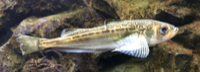

はたはたの漁獲量 都道府県ランキング
全9都道府県の順位と漁獲量
最終更新：
はたはたの漁獲量が全国で最も多いのは鳥取県で、617 tです。全国（1,427 t）の43%を占めます。

| 順位 | 都道府県 | 漁獲量 | 全国に占める割合 |
|---|---|---|---|
| 1位 | 鳥取県 | 617 t | 43% |
| 2位 | 北海道 | 394 t | 28% |
| 3位 | 兵庫県 | 263 t | 18% |
| 4位 | 石川県 | 70 t | 4.9% |
| 5位 | 福井県 | 37 t | 2.6% |
| 6位 | 秋田県 | 16 t | 1.1% |
| 7位 | 青森県 | 14 t | 1.0% |
| 8位 | 京都府 | 7 t | 0.5% |
| 9位 | 山形県 | 4 t | 0.3% |
PR

はたはたの漁獲量の推移（令和2年〜令和6年）
全国の漁獲量は、令和2年の4,853 tから令和6年の1,427 tへ、71%減りました。1位は入れ替わっています（令和2年は兵庫県、令和4年は鳥取県、令和5年は北海道、令和6年は鳥取県）。
| 年 | 全国 | 1位 | 2位 | 3位 |
|---|---|---|---|---|
| 令和6年 | 1,427 t | 鳥取県617 t | 北海道394 t | 兵庫県263 t |
| 令和5年 | 565 t | 北海道160 t | 秋田県111 t | 鳥取県104 t |
| 令和4年 | 3,144 t | 鳥取県1,334 t | 兵庫県890 t | 秋田県196 t |
| 令和3年 | 4,085 t | 兵庫県1,456 t | 鳥取県1,413 t | 秋田県317 t |
| 令和2年 | 4,853 t | 兵庫県1,783 t | 鳥取県1,294 t | 秋田県406 t |
この数字について
- 分類：鰰の仲間
- 全国の漁獲量：1,427 t
- この数字が表すもの：漁獲量（海面漁業の漁獲量。養殖は含みません）
- 調査：海面漁業生産統計調査（海面漁業） 令和6年
- 9県分を調査（調査していない県は順位に入りません）
はたはたの漁獲量について、よくある質問
- はたはたの漁獲量が日本一の都道府県はどこですか？
- 鳥取県です。海面漁業生産統計調査（海面漁業）（令和6年）で617 tでした。
- はたはたの漁獲量ランキング2位・3位はどこですか？
- 2位は北海道（394 t）、3位は兵庫県（263 t）です。
- はたはたの漁獲量ランキング4位・5位はどこですか？
- 4位は石川県（70 t）、5位は福井県（37 t）です。はたはたの全9県の順位は上の表のとおりです。
- はたはたの全国の漁獲量はどれくらいですか？
- 1,427 t（令和6年）です。
広告